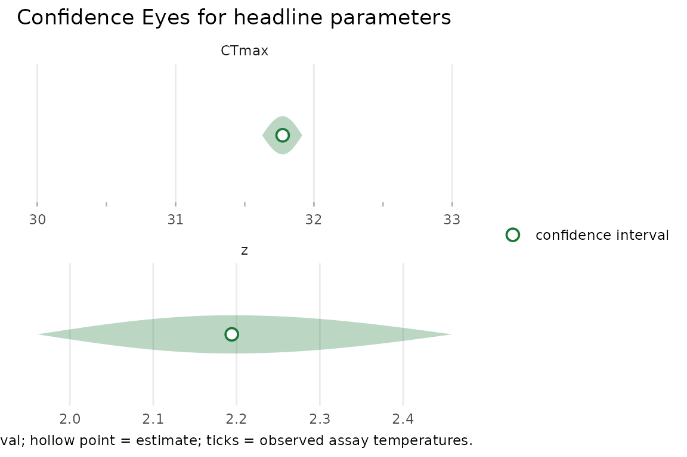

freqTLS is the maximum-likelihood / profile-likelihood
complement to bayesTLS.
This vignette lays out the relationship, the credit, and a reproducible
three-way comparison on the shared benchmark datasets.
This vignette builds without Stan. The live
bayesTLS (Stan) calls are shown for reproducibility but are
not evaluated here; the Bayesian and classical
two-stage numbers are read from a maintainer-built cache if it
is present. The freqTLS fits run live. When the
cache is absent (as in a fresh checkout, and in continuous integration),
the vignette shows the recipe and the freqTLS side, and
explains how to populate the cache.
Credit and origins
The thermal-load-sensitivity (TLS) modelling framework implemented
here was introduced by Daniel W. A. Noble, Pieter A. Arnold, and
Patrice Pottier in the bayesTLS package
(manuscript in preparation). The 4PL thermal death-time model and the
mapping from the midpoint slope to z and CTmax
are theirs. freqTLS is an independent likelihood
implementation of that framework; please cite bayesTLS when
you use it. The bundled benchmark datasets retain their own
source-specific rights. See the relevant data help page,
inst/COPYRIGHTS, and the component rights ledger; do not
infer a redistribution licence merely from the bayesTLS
comparison.
freqTLS contributes a TMB maximum-likelihood likelihood,
the direct CTmax/z reparameterisation that
makes both quantities profile-able, and profile-likelihood confidence
intervals.
The three-way design
The benchmark compares three estimators of the same constant-shape
4PL, all locked to the relative mortality threshold and
a matched time unit / reference time so the comparison is fair
(docs/design/06-benchmark-protocol.md):
| Estimator | Path | Uncertainty |
|---|---|---|
| Classical two-stage | bayesTLS::ts_stage1 -> ts_stage2 -> ts_ci |
delta-method CI |
| Bayesian | bayesTLS::fit_4pl(temp_effects = "mid") -> extract_tdt(target_surv = "relative") |
posterior credible interval |
freqTLS |
fit_4pl() -> tls(method = "profile") |
profile-likelihood confidence interval |
Under this matched configuration the Bayesian and profile-likelihood
fits target the same likelihood and the same fitted
curve (see vignette("model-math")); they differ in
how they summarise uncertainty — a posterior (with priors) versus a
prior-free likelihood interval.
The reproducible recipe (not run here)
These chunks are the exact bayesTLS calls used to build
the cache on a machine with Stan installed. They are shown with
eval = FALSE so this vignette never needs Stan.
library(bayesTLS)
data(shrimp_lethal, package = "freqTLS")
# 1. Standardise: name the temperature / duration / count columns and the time
# unit. fit_4pl() and the two-stage path both consume the standardised frame.
std <- bayesTLS::standardize_data(
data = shrimp_lethal,
temp = "Temperature_assay",
duration = "Duration_exposure_hours",
n_total = "N_individuals_after_trial",
mortality = "Mortality_after_trial",
duration_unit = "hours"
)
# 2. Bayesian fit, matched: constant shape via temp_effects = "mid", beta-binomial.
bfit <- bayesTLS::fit_4pl(
data = std,
temp_effects = "mid",
family = brms::brmsfamily("beta_binomial", link = "identity"),
chains = 4, iter = 4000, seed = 123, backend = "cmdstanr"
)
# 3. Relative-threshold CTmax + z at tref = 1 hour. NOTE: t_ref / time_multiplier
# live on extract_tdt() (and ts_stage2 / ts_ci), NOT on fit_4pl().
btdt <- bayesTLS::extract_tdt(
bfit, target_surv = "relative",
t_ref = 1, time_multiplier = 1, output_time_unit = "hours"
)
ctmax <- bayesTLS::get_ctmax_summary(btdt) # temp_lower / temp_median / temp_upper
zsumm <- bayesTLS::get_z_summary(btdt) # z_median / z_lower / z_upper
# 4. Classical two-stage, same standardised data and reference time.
s1 <- bayesTLS::ts_stage1(std, family = "betabinomial")
s2 <- bayesTLS::ts_stage2(s1, t_ref = 1, time_multiplier = 1)
tci <- bayesTLS::ts_ci(s2, method = "delta", level = 0.95,
t_ref = 1, time_multiplier = 1) # $CTmax_1hr and $z blocksTo populate the cache, a maintainer runs
data-raw/build_benchmark_cache.R on a Stan machine; it
writes inst/extdata/bayesTLS_benchmark_cache.rds (the
Bayesian and two-stage summaries plus a meta provenance
block: bayesTLS_version, git_sha,
cmdstan_version, date_built,
seed, the configuration, and the data-reconstruction
note).
The freqTLS side (live)
The freqTLS fits run live and need nothing beyond this
package. We use the shrimp_lethal data (ungrouped) and
zebrafish_lethal (grouped by life stage). The shrimp
survival counts are reconstructed from the source CSV proportions (see
?shrimp_lethal); because all three estimators share the
vendored data, they inherit the same reconstructed counts.
data(shrimp_lethal)
shrimp_std <- standardize_data(
shrimp_lethal,
temp = "Temperature_assay", duration = "Duration_exposure_hours",
n_total = "N_individuals_after_trial", mortality = "Mortality_after_trial",
duration_unit = "hours"
)
shrimp_fit <- fit_4pl(shrimp_std, t_ref = 1, family = "beta_binomial", quiet = TRUE)
tls(shrimp_fit, method = "profile")$summary
#> # A tibble: 2 × 4
#> quantity median lower upper
#> <chr> <dbl> <dbl> <dbl>
#> 1 CTmax 31.8 31.6 31.9
#> 2 z 2.19 1.96 2.46fit_4pl() returns a freq_tls
workflow object (the twin of bayesTLS’s
bayes_tls): it bundles the engine fit, the standardised
data, and the formula. Its S3 methods — tls(),
confint(), summary(),
plot_confidence_eye() — delegate to the engine fit, so you
call them on the workflow object directly. The underlying engine fit is
also available as shrimp_fit$fit if you want to reach
it.
data(zebrafish_lethal)
zebra_std <- standardize_data(
zebrafish_lethal,
temp = "assay_temp", duration = "duration_h",
n_total = "n_total", n_surv = "n_surv", duration_unit = "hours"
)
zebra_fit <- suppressWarnings(fit_4pl(zebra_std, by = "life_stage",
t_ref = 1, family = "beta_binomial", quiet = TRUE))
# per-stage CTmax and z with profile intervals
tls(zebra_fit, method = "profile")$summary
#> # A tibble: 6 × 5
#> life_stage quantity median lower upper
#> <chr> <chr> <dbl> <dbl> <dbl>
#> 1 young_embryos CTmax 39.9 39.8 40.0
#> 2 old_embryos CTmax 41.4 41.2 41.6
#> 3 larvae CTmax 39.8 39.7 39.9
#> 4 young_embryos z 2.00 1.82 2.19
#> 5 old_embryos z 1.80 1.53 2.16
#> 6 larvae z 1.98 1.76 2.22(The zebrafish fit emits a data-adequacy warning about temperatures
with fewer than three durations; this is the kind of identifiability
signal freqTLS surfaces explicitly. It is suppressed here
only to keep the vignette output tidy.)
The three-way comparison, with real numbers
The cache holds the maintainer-built bayesTLS
(posterior) and classical two-stage summaries; the freqTLS
column is computed live as this page renders. All three use the matched
configuration (beta-binomial, relative threshold, constant shape,
tref = 1 hour), so they target the same fitted
curve.
| Quantity | Two-stage (delta CI) | bayesTLS (95% CrI) | freqTLS (profile CI) |
|---|---|---|---|
| CTmax (°C) | 31.61 [31.33, 31.89] | 31.72 [31.59, 31.86] | 31.77 [31.63, 31.92] |
| z (°C / decade) | 2.06 [1.49, 2.64] | 2.18 [1.95, 2.44] | 2.19 [1.96, 2.46] |
For the shrimp data the three estimators land on essentially the same
CTmax and z, with comparable interval widths:
the profile-likelihood confidence interval and the Bayesian credible
interval nearly coincide. That is the point of the complementary framing
— under the matched configuration the likelihood and the posterior
summarise the same fitted curve, one with a prior and MCMC, the
other prior-free and by optimisation.
How fast, accurate, and calibrated
Accuracy and calibration below are descriptive characteristics of the
likelihood path, measured by simulation
(data-raw/performance-study.R) — they ask whether freqTLS’s
own intervals are trustworthy, not whether they beat
bayesTLS (which buys priors, full posteriors, and the
heat-injury sub-models). Speed, though, is one place a
head-to-head is both fair and stark.
How fast — a full fit, and one CTmax
profile interval, by design size:
| family | design | n_obs | median_fit_ms | median_profile_ms |
|---|---|---|---|---|
| binomial | tiny | 24 | 6 | 85 |
| binomial | small | 105 | 10 | 206 |
| binomial | medium | 252 | 15 | 331 |
| binomial | large | 440 | 28 | 604 |
| beta_binomial | tiny | 24 | 15 | 339 |
| beta_binomial | small | 105 | 28 | 391 |
| beta_binomial | medium | 252 | 45 | 1032 |
| beta_binomial | large | 440 | 87 | 1898 |
Fits are milliseconds and a profile interval is well under a second. Putting the three estimators side by side on the shrimp benchmark makes the speed gap concrete:
| Estimator | Task | Wall-clock | Source |
|---|---|---|---|
| freqTLS | fit (ML) | 28 ms | live |
| freqTLS | fit + Wald CTmax & z | 33 ms | live |
| freqTLS | fit + profile CTmax & z | 820 ms | live |
| classical two-stage | fit + delta CI | 1.4 s | cached |
| bayesTLS | fit (4 chains x 4000 MCMC) | 5.0 s | cached |
freqTLS’s profile path runs in about a second — comparable to the classical two-stage and roughly an order of magnitude faster than the Bayesian MCMC fit — while its Wald path is near-instant. That speed is the likelihood path’s concrete advantage, and it is why freqTLS keeps profile the default while offering Wald as a fast opt-in for well-identified fits. The whole three-way table above is itself computed live as this page renders, with no Stan.
How accurate — bias and RMSE for CTmax
and z:
| family | truth_setting | parameter | bias | rmse | n_converged |
|---|---|---|---|---|---|
| binomial | easy | CTmax | 0.0021 | 0.1003 | 300 |
| binomial | easy | z | 0.0103 | 0.1838 | 300 |
| binomial | harder | CTmax | 0.0068 | 0.0899 | 300 |
| binomial | harder | z | -0.0019 | 0.1571 | 300 |
| beta_binomial | easy | CTmax | -0.0015 | 0.1296 | 298 |
| beta_binomial | easy | z | 0.0017 | 0.2284 | 298 |
| beta_binomial | harder | CTmax | 0.0026 | 0.1026 | 283 |
| beta_binomial | harder | z | 0.0027 | 0.1994 | 283 |
How calibrated — empirical coverage of the 95% intervals:
| family | method | parameter | coverage | median_width | nominal |
|---|---|---|---|---|---|
| binomial | profile | CTmax | 0.947 | 0.405 | 0.95 |
| binomial | profile | z | 0.953 | 0.734 | 0.95 |
| binomial | wald | CTmax | 0.947 | 0.405 | 0.95 |
| binomial | wald | z | 0.957 | 0.734 | 0.95 |
| beta_binomial | profile | CTmax | 0.883 | 0.470 | 0.95 |
| beta_binomial | profile | z | 0.887 | 0.851 | 0.95 |
| beta_binomial | wald | CTmax | 0.927 | 0.458 | 0.95 |
| beta_binomial | wald | z | 0.920 | 0.837 | 0.95 |
Profile coverage tracks the nominal 95% closely; where it dips (small
samples, beta-binomial z), freqTLS reports it
honestly rather than hiding it.
Why the beta-binomial profile can dip — and what to use instead
The dip has a specific, diagnosable cause: the dispersion parameter
phi. When overdispersion is mild — phi large,
the data approaching the binomial limit — phi becomes
weakly identified, and its estimate runs away (its
relative standard error blows up). The profile interval for
CTmax / z profiles that runaway
phi out at each grid point, snaps to the binomial limit,
and goes too narrow. The Wald interval propagates the
flat-phi uncertainty through the joint Hessian and stays
calibrated; the parametric bootstrap is a middle ground. (This is
not a clamping artefact — the likelihood’s numerical floors
never activate in this regime; see
data-raw/beta-binomial-phi-study.R.)
| phi (overdispersion) | profile | Wald | bootstrap |
|---|---|---|---|
| 5 (strong) | 0.925 | 0.925 | 0.925 |
| 50 (mild) | 0.924 | 0.941 | 0.941 |
| 200 (very mild) | 0.685 | 0.935 | 0.907 |
Accordingly, fit_tls() emits an advisory when
phi’s relative SE is large, and confint()
(with the fallback = TRUE default) routes those
coordinates to Wald automatically — so the default path stays
calibrated without you having to intervene. More broadly, Wald (built on
the internal link scale and back-transformed) is fast and, in these
simulations, as well-calibrated as the profile for fixed effects — a
perfectly good choice for routine work. The profile remains the default
because it respects asymmetry without a normal approximation and now
degrades to Wald or the bootstrap exactly where it would be
unreliable.
You can see when the automatic routing fires: the method
column of confint() reads wald for the
rerouted coordinate even if you asked for profile, and an
informational message is emitted. To get an asymmetry-respecting
interval for that coordinate specifically, request the bootstrap — for
example confint(fit, "phi", method = "bootstrap").
When to use each method:
| Method | Use when |
|---|---|
profile (default) |
the headline choice — respects asymmetry, no normal approximation, and degrades honestly when a coordinate is weakly identified. |
wald |
fast routine work; as well-calibrated as the profile for fixed effects in these simulations; symmetric on the link scale. |
bootstrap |
a prior-free interval that is always finite (the non-closing
fallback), and the asymmetry-respecting option for up, a
weak phi, or any weakly identified coordinate. |
Always an interval: the bootstrap fallback
A Bayesian fit always returns an interval. So does
freqTLS: when a profile does not close — a weakly
identified design, a boundary asymptote — confint() falls
back to a prior-free parametric bootstrap (the
default), so you still get an asymmetry-respecting interval instead of
NA. It is the likelihood-path analogue of the posterior:
both summarise estimator uncertainty without a prior.
# A deliberately sparse design where the CTmax profile does not close.
sparse <- simulate_tls(family = "binomial", temps = c(35, 36), times = c(1, 2),
reps = 2, n = 10, CTmax = 36, z = 4, seed = 9)
sfit_sparse <- suppressWarnings(fit_tls(sparse, y = survived, n = total,
time = duration, temp = temp,
family = "binomial", tref = 1))
# Strict profile: NA on an open side. Default: a parametric bootstrap interval.
strict <- suppressWarnings(
confint(sfit_sparse, "CTmax", method = "profile", fallback = FALSE))
boot <- suppressWarnings(
confint(sfit_sparse, "CTmax", method = "profile", nboot = 1000, boot_seed = 1))
data.frame(
setting = c("strict profile (fallback = FALSE)", "default (bootstrap fallback)"),
conf.low = c(strict$conf.low, boot$conf.low),
conf.high = c(strict$conf.high, boot$conf.high),
method = c(strict$method, boot$method)
)
#> setting conf.low conf.high method
#> 1 strict profile (fallback = FALSE) 34.88526 36.70594 profile
#> 2 default (bootstrap fallback) 34.88526 36.70594 profileThe freqTLS interval is now available in exactly the
cases where a Bayesian fit would also give one — without a prior, and in
milliseconds.
The teaching device: posterior density versus Confidence Eye
The clearest way to see the Bayesian-versus-likelihood
distinction is to draw, for the same CTmax (or
z):
- the
bayesTLSposterior density — a probability distribution over the parameter, shaped by the prior and the data; and - the
freqTLSConfidence Eye — a confidence lens with a hollow point estimate, carrying no prior and making no probability statement about the parameter.
plot_confidence_eye(shrimp_fit, parm = c("CTmax", "z"), method = "profile")
The Confidence Eye above is the freqTLS half of that
contrast. When the cache (and bayesTLS) are available, the
posterior density for the same quantity can be drawn beside it; the
side-by-side makes explicit that one is a posterior and the other is a
likelihood confidence interval. freqTLS deliberately never
renders a posterior-style density for its own intervals, and its prose
uses “confidence” language, never “posterior” or “credible”.
Beyond the matched shape: stage-specific curves
The three-way comparison holds the shape constant (low,
up, k shared across temperatures and groups)
so all three estimators target the same curve — that is what
makes the benchmark fair. freqTLS can also relax that
restriction: the shape parameters low, up, and
log_k may vary by a grouping factor. Re-fitting
zebrafish_lethal with stage-specific shapes and comparing
by AIC asks whether the life stages differ in more than thermal
location (CTmax, z):
stage_shape <- suppressWarnings(fit_4pl(
zebra_std, by = "life_stage",
low = ~ life_stage, up = ~ life_stage, k = ~ life_stage,
t_ref = 1, family = "beta_binomial", quiet = TRUE
))
# zebra_fit (above) is the shared-shape fit; stage_shape lets low / up / k vary.
c(shared_shape_AIC = round(AIC(zebra_fit), 1),
stage_shape_AIC = round(AIC(stage_shape), 1))
#> shared_shape_AIC stage_shape_AIC
#> 1222.5 1187.9The stage-specific model has the substantially lower AIC, so the data
support per-stage shapes. The difference is concentrated in the upper
asymptote up (the maximum survival at benign exposures),
not the steepness k:
stage_est <- stage_shape$fit$estimates
stage_est[grepl("^up:", stage_est$parameter), c("parameter", "estimate", "std.error")]
#> parameter estimate std.error
#> 4 up:young_embryos 0.7177178 0.03159488
#> 5 up:old_embryos 0.9180763 0.01502271
#> 6 up:larvae 0.9393117 0.02523538Young embryos have a markedly lower survival ceiling (up
near 0.7) than older embryos and larvae (near 0.9) — a real biological
difference that the matched constant-shape configuration, used by the
classical two-stage workflow and the bayesTLS benchmark
here, cannot express.
freqTLS also reads absolute critical temperatures and
predicts heat injury off the same fitted curve. For the (ungrouped)
shrimp fit, the absolute critical temperature for 50% survival at one
hour, and the survival predicted under a four-hour exposure at 32
°C:
c(
CTmax_50pct_1h = round(derive_ctmax(shrimp_fit$fit, surv = 0.5, duration = 1), 2),
surv_32C_4h = round(tail(predict_heat_injury(shrimp_fit$fit,
data.frame(time = seq(0, 4, by = 0.1), temp = 32))$survival, 1), 3)
)
#> CTmax_50pct_1h surv_32C_4h
#> 31.730 0.018(derive_tcrit() similarly returns a rate-multiplier
T_crit, with an explicit lethal-endpoint caveat.) These are
deterministic transforms of the fitted CTmax /
z, not new fits.
When to prefer which
- Use
freqTLSwhen you want fast, prior-free, asymmetry-respecting intervals and an explicit identifiability check. When the profile does not close it falls back to a parametric bootstrap, so it returns an interval even on sparse or boundary designs. - Use
bayesTLSwhen you want a full Bayesian workflow, prior information, or the heat-injury and repair sub-models.
The two are complementary lenses on the same model.
freqTLS flags weak identifiability explicitly and never
claims the profile is universally superior; see
vignette("profile-likelihood") for the non-closing
behaviour and the bootstrap fallback.